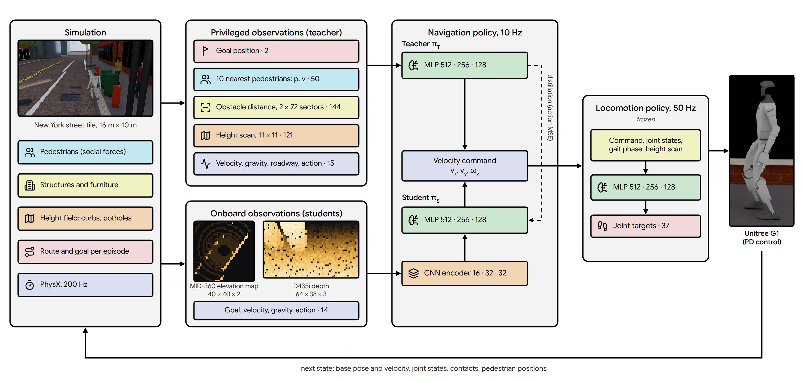
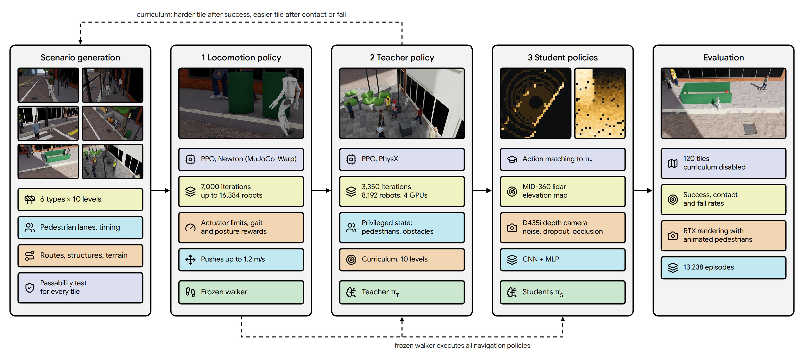
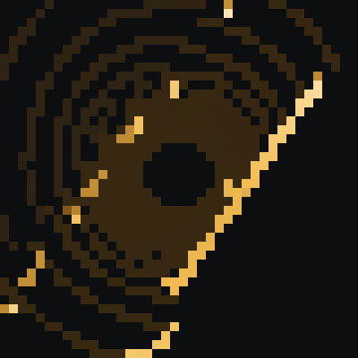
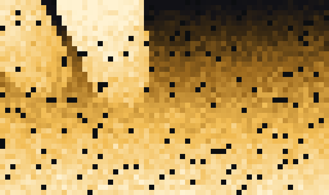

Abstract
We study goal-directed navigation of a Unitree G1 humanoid in dense urban pedestrian environments. We construct a procedurally generated suite of New York City street scenarios (sidewalks, sidewalk sheds, crosswalks, construction zones, doorways and pedestrian plazas) at ten difficulty levels, populated by pedestrians that follow a social-force model in which some pedestrians react to the robot only at close range. Control is hierarchical: a locomotion policy trained with the actuator limits of the physical robot tracks velocity commands at 50 Hz, and a navigation policy issues these commands at 10 Hz. A navigation teacher with privileged state is trained with PPO and distilled into student policies that observe only the robot's onboard sensors (Livox MID-360 lidar or Intel RealSense D435i depth camera). Evaluated on 13,238 episodes over all 120 scenario tiles, the teacher reaches the goal in 79.1% of episodes, with pedestrian contact in 11.9%, obstacle contact in 7.9% and falls in 0.7%. Success decreases to 44% and 50% on the narrowest sidewalks and sidewalk sheds. All experiments are conducted in simulation (Isaac Lab 3.0, Isaac Sim 6.1).
Video
Method
The navigation policy outputs a velocity command (forward velocity, lateral velocity and yaw rate) at 10 Hz. A frozen locomotion policy converts the command into joint position targets for the 37 joints of the G1 at 50 Hz, which are tracked by PD controllers; the simulator runs at 200 Hz. The teacher observes privileged simulator state. Student policies observe proprioception, the goal position and one onboard sensor, and are trained to reproduce the teacher's commands.

Training proceeds in three stages; each stage is frozen before the next is trained (Figure 4, Table 1). The locomotion policy is trained on uneven city terrain with the torque and velocity limits of the G1 actuators, gait-phase and posture rewards, and random pushes. The teacher is trained with PPO on the scenario suite under a difficulty curriculum. The students are trained by distillation from the teacher.

| Locomotion policy | Teacher | Students | |
|---|---|---|---|
| Algorithm | PPO | PPO | Distillation (action MSE) |
| Simulator | Newton (MuJoCo-Warp) | Isaac Sim PhysX | Isaac Sim PhysX |
| Policy rate | 50 Hz | 10 Hz | 10 Hz |
| Parallel robots | 4,096, then 16,384 | 8,192 | 8,192 |
| Rollout length | 24 | 32 | 32 |
| Iterations | 4,000 + 3,000 | 3,350 | 1,500 |
| Network | MLP 512-256-128 | MLP 512-256-128 | CNN 16-32-32, MLP 512-256-128 |
| Hardware, time | 1 GPU 44 min, 4 GPUs 31 min | 4 GPUs, 4.9 h | 4 GPUs (in progress) |
Environment
The terrain is a grid of 16 m × 10 m tiles. Columns correspond to the six scenario types and rows to ten difficulty levels. In each episode the robot is placed at one end of a route on its tile and must reach the other end within 40 s.
Pedestrian model
- Dynamics. Pedestrians are kinematic bodies that follow walking lanes under a social-force model with repulsion from other pedestrians and from structures. Walking speeds are drawn from 0.7–1.3 m/s at level 1 and 0.8–1.6 m/s at level 10; 10% walk at 0.4–0.6 m/s.
- Encounters. 65% of walking pedestrians are timed to reach the robot's route when the robot does (assuming 0.8 m/s), so that pedestrians cross and block the route. The number of pedestrians increases with difficulty, up to 20 on plaza tiles.
- Awareness. A fraction of pedestrians (90% at level 1, 60% at level 10) perceive the robot: they keep a clearance of at least 0.1 m, slow down when the robot blocks their path and step around it. The resulting loss of pedestrian speed is penalized, which rewards yielding.
- Distracted pedestrians. The remaining pedestrians do not slow down and react only within 1 m with a lateral swerve.
- Other behaviors. Stationary pedestrians at waiting spots (curbs, doorways, work zones) start walking after 5–25 s. No pedestrian is spawned within 1.5 m of the robot.
- Feasibility. A unit test verifies that every route admits a path of width 0.6 m on every tile type at difficulties 0, 0.5, 0.8 and 1.
| Term | Definition | Weight |
|---|---|---|
| Progress | Reduction of distance to the goal per second, clipped to ±1.5 m/s | 2.0 |
| Goal reached | Within 0.5 m of the goal (terminates) | 100 |
| Contact | Pedestrian or obstacle contact (terminates) | −100 |
| Fall | Torso contact with the ground (terminates) | −200 |
| Personal space | Penetration of a 0.5 m clearance to the nearest pedestrian (m) | −4 |
| Obstacle margin | Penetration of a 0.15 m margin to the nearest structure (m) | −4 |
| Pedestrian delay | Total speed lost by pedestrians slowing for the robot (m/s) | −1 |
| Roadway | Robot in the roadway outside a crosswalk | −2 |
| Action rate | Squared change of the velocity command | −0.1 |
Sensing
The student policies use only the sensors installed on the G1, at the poses given in the robot's URDF. The MID-360 is mounted inverted in the head, about 1.1 m above the ground, with a vertical field of view of −52° to +7°; it is simulated with 32 channels at 1° horizontal resolution and a 10 m range. The D435i is pitched 47.6° downward.

(a) Lidar student: elevation map, 8 m × 8 m, 0.2 m cells, robot-centred and heading-aligned.

(b) Camera student: depth image, 64 × 38 px, 87° × 58° field of view, maximum range 6 m.
Results
The final teacher policy is evaluated with the curriculum disabled and robots distributed uniformly over all 120 tiles (2,400 robots, 60 s of simulated time, 13,238 completed episodes, PhysX). Pedestrian motion and policy inputs are as in training; random pushes are disabled.
Show values as a table
| Outcome | Share of episodes |
|---|---|
| Goal reached | 79.1% |
| Pedestrian contact | 11.9% |
| Obstacle contact | 7.9% |
| Fall | 0.7% |
| Time-out (40 s) | 0.4% |
| Mean time to goal (successful episodes) | 10.5 s |
Pedestrian contacts are mostly initiated by the robot: in 67.8% of them the robot approached faster than the pedestrian, and 33.7% involve pedestrians that perceive the robot, which by construction do not reduce their clearance below 0.1 m themselves. Success is lowest on hard sidewalk (43.9%) and sidewalk-shed (50.1%) tiles, where the walkway admits one person at a time and the policy often does not wait for oncoming pedestrians to pass.
Mean curriculum level
Success rate at the current curriculum level
| Metric | Newton | Newton, pushes ≤ 1 m/s | PhysX |
|---|---|---|---|
| Forward velocity error (m/s) | 0.100 | 0.119 | 0.103 |
| Lateral velocity error (m/s) | 0.090 | 0.100 | 0.090 |
| Yaw-rate error (rad/s) | 0.165 | 0.179 | 0.236 |
| Torso tilt | 3.8° | 3.9° | 4.0° |
| Knee flexion | 30.6° | 31.3° | 31.5° |
| Pelvis height (m) | 0.734 | 0.736 | 0.732 |
| Falls | 4 | 6 | 7 |
Limitations
- All results are in simulation; the policies have not been deployed on hardware.
- The reported navigation results are for the privileged teacher. Training of the lidar student is in progress; the camera student has not been trained yet.
- Pedestrians are kinematic and scripted; contact ends the episode, and physical interaction between robot and pedestrians is not modeled.
- Performance on the narrowest corridors (hard sidewalk and sidewalk-shed tiles) remains low.
- With the default mounting, the D435i observes the ground only up to about 3.4 m ahead, which limits anticipation for a camera-only policy.
Context
This project is part of work toward a civic robot system for the applications of the Center for Smart Streetscapes (CS3), an NSF Engineering Research Center led by Columbia University. It follows earlier work on street-scene perception: SyntheticStreetScenes, a dataset of approximately 5,200 generated street-scene videos with prompts and attributes, and StreetPrompt, a street-camera video classifier with classes specified as text.
BibTeX
@misc{turkcan2026g1patrol,
title = {G1 Patrol: Humanoid Navigation in Dense Urban Pedestrian Environments},
author = {Turkcan, Mehmet Kerem},
year = {2026},
howpublished = {\url{https://github.com/mkturkcan/g1_patrol}}
}